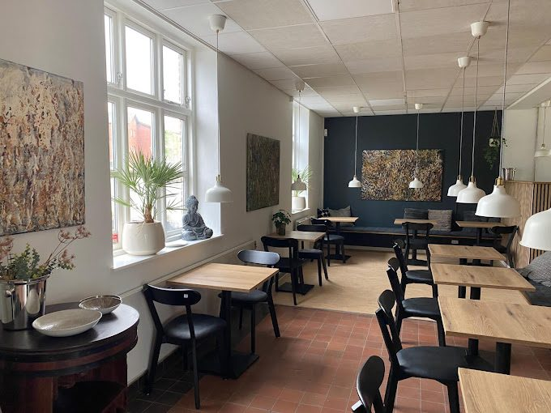
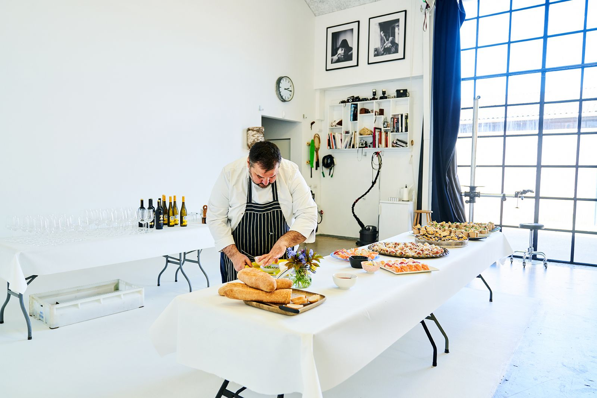

Om os
Stationen, Niels og Rapheephon

Først en station, så et spisested
Ikast Station blev bygget i 1877, da strækningen mellem Silkeborg og Herning åbnede. Stationsforstanderen boede på første sal, og bygningen står stort set som dengang.
I slutningen af 2010'erne blev stationsbygningen lavet om til café. I dag spiser man med udsigt til togbanen på den ene side og Lille Torv på den anden.
Niels, manden ved gryderne
Niels Rasmussen er vokset op på en kro, så kro-maden har han med hjemmefra. Han er uddannet kok og har fortid på Le Canard og Norsminde Kro.
I 2023 overtog han caféen på stationen og gjorde den til det, den er i dag: et sted med dansk kro-mad, dagens ret og alt det, der hører til.
Skal Niels lave maden hos jer? Se mere på lejenkok.dk, eller klik på Selskaber i menuen.


Rapheephon, værtinden med sit eget køkken
Rapheephon tager imod gæsterne, og hun står bag caféens hjemmelavede thai. Panang, stegte nudler og forårsruller, alt sammen fra bunden.
Niels og Rapheephon står sammen for maden på stationen. To køkkener, ét hus.
Kig forbi stationen
Kom bare forbi, du behøver ikke at bestille bord.